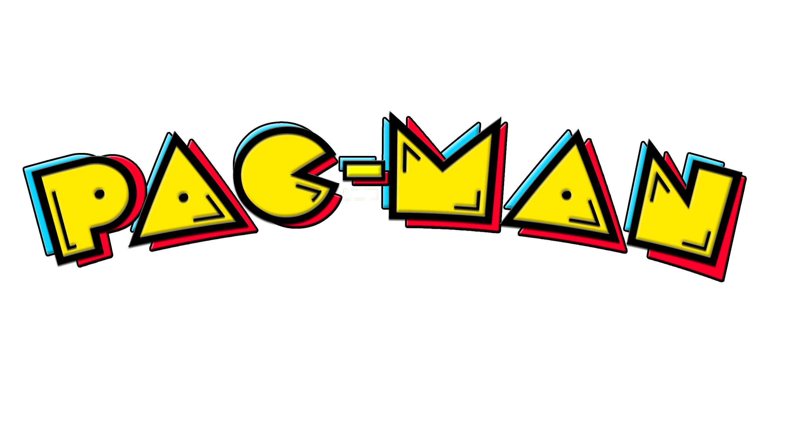
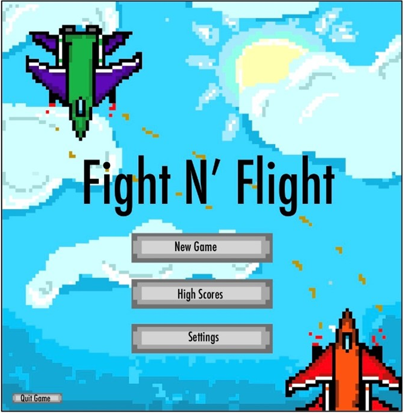

Overview
Fight N’ Flight is a two-player game developed in C++ inspired by retro arcade games like Galaga, featuring pixel-art design. Gameplay consists of constant shooting from both players. The two players must move up and down the screen to avoid the others fire. There is also a missile special attack that has a cool down after use and other obstacles that can block the other player from landing hits. The first player that’s health drops to zero losses.
Role
This project was completed by a team of eight programmers.
My role was Design Lead and UI Programmer. Responsibilities of this role included designing the user interfaces and making sure the game provides a good user experience. In addition, I designed and created all game assets, backgrounds, and sprites as well as assisted in coding the graphical user interfaces.

Tools
The group used planning and version controls softwares such as Confluence, Jira,
and Github to create an Agile development work style for the team. This consisted of frequent team
meetings and weekly scrums. team members developed the code using IDE's such as CLion and VSCode
Project Goals
The goal of this project was to create an engaging game that could be played by
two players. The game was designed to be simple and easy to learn but also fun and competitive.
The GUI should be easy to navigate and have clear navigational paths
Research
Before beginning the development of the UI/UX for Fight N’ Flight our team took
a dual approach to research. We began with classic arcade games like Galaga and Pacman, to try
and uncover what gives them their simple and nostalgic charm. This was done by analyzing visual
styles, control mechanisms and user interactions that defined these beloved titles. The aim was
to capture the essence of theses vintage games while infusing modern design principles to enhance
user experience.

Simultaneously we conducted user research to understand contemporary players
expectations and preferences. This involved gathering feedback from a diverse group of gamers
through a survey. Focus was put into understanding what players valued in an arcade shooter. Merging
these insights we designed an interface that blends retro appeal with contemporary ease of use.
Ideation
In developing "Fight N’ Flight," we used a straightforward yet effective ideation process.
We collaborated on a online sticky note board, where each team member could put down their ideas, big or small.
This ranged from gameplay features to design elements. By grouping these notes together, we could easily
see common themes and interesting concepts. This simple method helped us pool our thoughts and shape the
game in a collaborative, organized way.
Game Flow
The first thing to begin the process of bringing
the game to life was defining all of the windows needed and creating a game flow that shows a high level
overview of user navigation paths
There are seven windows for the game, including the title page, player titles, game in progress, pause,
settings, high scores, and end screen.
Use Cases
The next step in the process was to define the use cases for each window. This was done by
creating a use case diagram that shows the different actions a user can take in each window. This helped
to define the functionality of each window and the interactions between them.
Player Loads Program
Participating Actors
Player
Flow of Events
- 1. User uses computer and opens application to run game file
- 2. User launches / runs the game file
- 3. User is brought to main menu
- 4. Main menu is displayed, and menu buttons are made available to user
- 5. User can press any of the menu buttons and the respective process a button is ran (i.e pressing the exit button will exit the game)
Entry Condition
User has downloaded and opens or runs the game file on a computer.
Exit Condition
User closes the game by either clicking the exit game button or terminating the program outside the game.
Player Starts Game
Participating Actors
Player(s)
Flow of Events
- 1. User presses the play game button in main menu.
- 2. Game loads.
- 3. User(s) start to play.
- 4. Game lasts until user is defeated.
Entry Condition
User opens or runs the game file on a computer and presses start game.
Exit Condition
User closes the game by either clicking the exit game button or terminating the program outside the game.
Wire Frames and Mockups
Wireframes laid the foundational structure for the game’s interface, outlining essential
elements like the scoreboards, health bars, and navigational buttons. We created numerous interations of the skeletal
blueprints to refine the gameplay experience
Moving to mockups, we added color and detail, experimenting with the game's pixel-art style. These mockups
offered a tangible look at the final game, essential for user testing and crucial in showcasing the game's
visual direction and flow to stakeholders early in the development process.

Accessibility
To ensure an enjoyable and fair experience in "Fight N' Flight," we implemented key customizable
control settings to accommodate players with different physical abilities,
enhancing overall game accessibility and user satisfaction. Examples of customizable settings are game contrast,
key bindings, and keystroke sensitivity.
Performance Indicators
The primary performance indicator in terms of user experience is the user interface responsiveness.
The game should launch quickly and display the menu to the user within a certain benchmark of time. All the
buttons should be functional and be followed by quick page load times. The key aspect is the
responsiveness of the game characters when moving and firing during gameplay as well as the health bar
updating when damage is taken.
Take Aways
An important takeaway from this project was learning how to develop a project in a larger
team. When not directed properly larger teams can have lower productivity and struggle to make a quality product,
so this project taught me invaluable skills that will help me contribute to a high performing teams and project
management. This included breaking
problems down into their fundamental challenges and assigning each task to the team member best suited to the
task whether it be design, development or leadership roles. Learning how to use project management softwares
like confluence and working in an agile development environment highlighted the importance of frequent
communication and continuously incorporating feedback from other team members and testing.